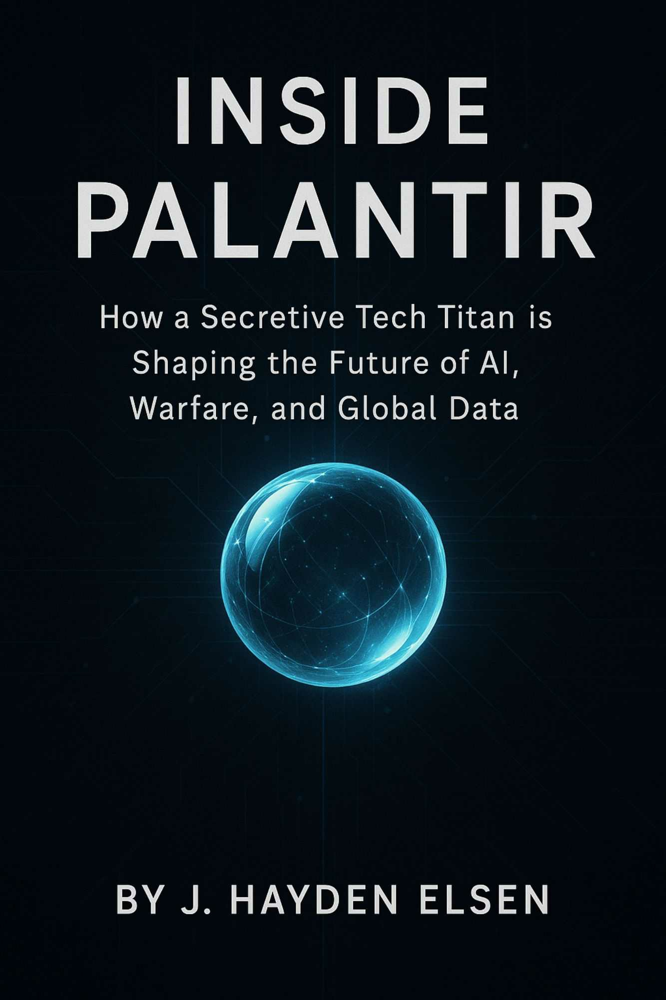

一家神秘科技巨头如何塑造AI、战争和全球数据的未来
J. Hayden Elsen 著
版权所有 © 2025 J. Hayden Elsen
保留所有权利。未经作者事先书面许可，不得以任何形式或方式——包括影印、录制或其他电子或机械方法——复制、分发或传播本出版物的任何部分，除非是在评论文章中使用的简短引用以及版权法允许的某些其他非商业用途。
如需许可申请，请通过适当渠道联系出版商。
本书是对Palantir Technologies的独立新闻调查，仅供信息和教育目的。作者已尽一切努力确保出版时内容的准确性，所依据的是公开来源、媒体报道、官方文件和历史文献。
本书不隶属于、不由Palantir Technologies Inc.及其子公司或任何代表背书或赞助。所有商标和公司名称均为其各自所有者的财产，仅用于识别目的。
本书所呈现的观点和分析为作者个人观点,不构成法律、财务或专业建议。
在一个以透明和喧嚣为特征的数字时代,Palantir Technologies完成了一项惊人的壮举:它在全球权力的神经中枢工作的同时,仍保持着神秘面纱。从9/11后反恐工作的起源,到在商业AI部署中不断扩大的角色,Palantir跨越了两个看似不相容的领域——保密和影响力。这是一家很少做广告、很少解释的公司,但却越来越多地塑造着作战室、董事会和政府大厅的决策。
很少有硅谷公司能激发如此两极分化的反应。Palantir的崇拜者将其誉为技术哨兵——一家构建软件的公司,使各国能够以无与伦比的精确度对抗恐怖主义、流行病和网络威胁。与此同时,批评者警告称其存在蔓延的监控、数据不透明,以及技术精英操纵国家机器的问题。这些双重叙事不容易调和。也不应该调和。它们构成了Palantir故事的架构——一个关于创新与争议、才华与抵抗的故事。
理解Palantir就是进入一种新型的科技景观。这不是社交媒体点击或电子商务算法的世界。Palantir在一个数据不仅仅是被组织——而是被武器化的层面上运作。从零散的情报流中提取的洞察被编织成可操作的决策:定位坎大哈的叛乱分子、管理底特律的呼吸机分配、预测斯图加特的供应链中断。它的软件不仅预测,还开出处方。
本书不是从赞美或谴责开始,而是从好奇心开始。Palantir是什么?一家最初被视为小众分析工具的初创公司,如何崛起成为国家安全和全球商业战略的关键?它不断扩大的影响力对AI、隐私和民主治理的未来意味着什么?
要探讨这些问题,我们必须首先承认任务的难度。Palantir不能轻易归入科技成功的常见原型。它不是像苹果或亚马逊那样面向消费者的巨头。它也不像寻求市场份额的初创公司那样以快速的产品周期运作。相反,Palantir在长时间线和深度整合中运作。它的客户——政府、情报机构和财富500强公司——购买的不仅仅是许可证,而是邀请公司进入他们的组织DNA。
这一模式的核心是数据:分散、混乱,且往往在其影响上关乎生死。Palantir的核心创新不仅在于聚合数据,而在于使其在庞大的组织系统中变得可理解。它的平台——Gotham、Foundry以及最近的AIP——不出售洞察,而是使洞察成为可能。这使Palantir不仅仅是一个软件供应商,而是机构理解世界方式的认识论转变(epistemological)。这不是一个小的主张。但这是公司微妙地——有时是公开地——追求的主张。
在国防和情报圈,Palantir的崛起是作为颠覆者出现的。长期依赖老化的政府承包商和专有系统,像CIA、NSA和国防部这样的机构在Palantir中找到了一个愿意挑战正统观念的合作伙伴。其早期部署使分析师能够连接分散的情报报告、可视化威胁网络,并比传统系统更快地采取行动。在伊拉克和阿富汗,Palantir软件成为战场工具——受到士兵称赞,却让五角大楼官僚感到不满。一位美国陆军上尉曾有一句名言,使用Palantir就像从”黑白到高清”。这一情绪虽是轶事,却捕捉到了更广泛的转变。
随着Palantir扩展到私营部门,它既带来了这一血统,也带来了其运营理念:长期合作伙伴关系、定制实施和毫不掩饰的复杂性。其工具已被部署于管理航空航天公司的供应链、为公共卫生机构模拟流行病场景,甚至在金融机构中检测欺诈。使命始终如一:获取庞大、通常难以访问的数据,并让它说话。
然而，尽管影响深远，Palantir 并未被普遍理解。这在很大程度上源于其保密性。与大型科技公司同行光鲜亮丽的营销活动不同，Palantir 更倾向于保持沉默。其网站简洁明了。其领导层，尤其是首席执行官 Alex Karp，常常用哲学谜语而非产品路线图来表达。该公司2020年在纽约证券交易所的直接上市带来了一些被迫的透明度，但即便如此，它仍像一个披着科技外衣的情报机构那样运作。
这种姿态只会加深公众的模糊认知。Palantir 是一家国防承包商、数据公司，还是其他什么？它是失败公共机构的救世主，还是私有化治理的特洛伊木马？答案难以捉摸——而且常常自相矛盾。
本书的目的不是解决这些矛盾，而是全面审视它们。这是一部记录和分析的作品，而非布道或控诉。接下来的章节追溯了 Palantir 的起源故事、技术基础、不断演变的商业模式，以及笼罩其崛起的争议。我们将探讨它如何运作、为谁服务，以及可能走向何方。
始终如一的目标是清晰：照亮一家部分依靠在黑暗中运作而蓬勃发展的公司。如果 Palantir 代表着人工智能驱动机构的未来，那么理解它不是可选的——而是必需的。
这就是 Palantir 的故事。一个隐藏的巨人。一台洞察机器。一个关于技术如何塑造——并被塑造于——我们时代最紧迫问题的案例研究。
引言——隐藏的巨人
目录
第1章：起源：硅谷遇见情报界
第2章：创始人与哲学
第4章：产品套件与平台架构
第5章：政府合同与公共应用
第6章：商业扩张
第7章：文化与领导风格
第8章：财务历程与估值
第9章：争议与伦理质疑
第10章：全球影响力与地缘政治
第11章：驾驭人工智能时代：战略与竞争
第12章：未来展望与批判性评估
结论——Palantir 悖论
2003年秋天的一个清爽下午，斯坦福大学的一间小会议室见证了一场会议，这场会议将重塑技术与国家安全的交汇点。围坐在一张朴素橡木桌旁的是四位年轻人，他们的道路虽然各异，却汇聚于一个共同的雄心：将数据作为全球反恐斗争中的武器。Peter Thiel，PayPal 富有魅力的联合创始人；Alex Karp，一位具有哲学倾向的法学博士，热衷于宏大理念；Stephen Cohen，一位天才程序员，其代码流畅地运用算法表达；以及 Joe Lonsdale，一位具有冒险精神的数字专家——他们共同勾勒出了后来成为 Palantir Technologies 的轮廓。
Thiel 刚从 PayPal 出售给 eBay 的交易中获得了资本和信心。他相信，用于打击点对点支付欺诈的统计技术可以被重新设计，用于追踪隐藏在情报海洋中的威胁。Karp 对现代战争的道德意义感兴趣，并着迷于 Hannah Arendt 关于平庸之恶的著作，他提供了哲学指南针。Cohen 和 Lonsdale 凭借敏锐的技术技能调和了年轻的热情，他们提供了将愿景转化为代码的手段。
这四人将他们的企业命名为”Palantir”，向托尔金的真知晶石致敬——这些装置能传递遥远事件的片段，但也存在误解的风险。这既是警告也是承诺：知晓的力量，如果明智使用，可以照亮黑暗角落；如果滥用，则可能释放出无法控制的力量。
他们在帕洛阿尔托开设了办公室，距离培育了硅谷最伟大成功的风险投资公司不远。但他们的产品既不是社交网络也不是购物门户。这是一款旨在吸收不同数据流——金融交易、通信日志、卫星图像——并将它们编织成连贯的、可交互的威胁网络地图的软件。如果恐怖组织策划袭击，Palantir 的平台将揭示深埋在噪音中的联系。
在 PayPal 早期，价值数十亿美元的欺诈交易通过数字账本流动，被虚假账户网络窃取。为了对抗这一点，Thiel 和他的团队开发了能够学习识别欺骗模式的算法——异常的小额转账集群、可疑的账户创建序列。每次成功阻止欺诈，系统就变得更智能。
到2003年，Thiel 在反恐中看到了这一挑战的回响。情报机构需要处理大量非结构化报告：截获的电话、简短的现场调度、机密电报。分析师难以将散布在数百个独立数据库中的姓名、地点和事件联系起来。Thiel 提议重新利用 PayPal 的异常检测引擎来标记人类网络中的异常情况。曾经的敌人是窃取银行账户的黑客，现在可能是策划高价值袭击的特工。
Karp从德国学习哲学一年归来后，欣然接受了这项事业的象征意义。他设想将人类判断与自动化严谨性综合起来——一个增强而非取代分析师的系统。在这家新兴公司的董事会议室里，他谈论技术与使用者之间的”认识论伙伴关系”(epistemic partnership)，即使在深入秘密领域时也以道德反思为基础。
Cohen和Lonsdale在临时隔间里开始制作原型。他们构建了模块化架构：数据连接器用于从机密网络摄取数据流；可视化引擎用于渲染节点和边；搜索工具可以跨语言匹配模糊别名。他们的口号是”不落下任何电子表格”。每一份孤立的报告，每一条加密日志，只要能访问，都会输入到他们贪婪的系统中。
到2004年春，Palantir的测试版已经可以进行演示了。在一个空军设施的安全地下室里，Karp和Cohen展示了一幅反恐相关数据的画面：电话记录揭示嫌疑人的通话模式；金融交易暗示资金来源；地理空间信息准确定位会面地点。当一名官员点击一个名字时，界面展开成网络图，揭示了之前隐藏的关联。与会者悄悄地感到印象深刻——尽管对触手可及的原始力量有些不安。
然而，从原型到产品的道路绝非一帆风顺。Palantir向习惯于与老牌国防巨头——洛克希德·马丁、雷神和博思艾伦等公司签约的情报机构推销其软件。这些公司拥有雄厚的资金、根深蒂固的关系和官僚惰性。相比之下，Palantir未经验证、规模小，而且全面缺乏安全许可。说服各机构信任一家新兴初创公司处理机密数据被证明是西西弗斯式的任务。
与此同时，沙山路的风险投资家谨慎地审视Palantir的利基市场。传统风投寻求消费者规模的增长——“病毒循环”、广告收入、订阅流失指标。Palantir的政府分析师受众，即使有利可图，似乎也有限。其销售周期延续数个季度，集成需求定制：每次部署都需要数月的技术支持、政策谈判和广泛的安全认证。对于风投来说，这意味着低利润和高风险。
2005年初，在烧完Thiel的创始人基金的初始种子资金后,公司摇摇欲坠。月度开支超过新资本。帕洛阿尔托办公室的灯光深夜闪烁，工程师们争分夺秒地修补漏洞和加强加密协议。有传言称Palantir将被迫裁员一半或完全关闭。
希望出人意料地到来了。CIA的风险投资部门In-Q-Tel听说了Palantir的演示。In-Q-Tel的使命——为美国情报界寻找有前途的技术——不同于逐利的风投。经过秘密对话和深入背景调查后，In-Q-Tel提供了200万美元的适度注资，前提是获得安全认证并向其合作机构交付可运行的原型。
这条生命线为Palantir赢得了改进架构和扩大运营的时间。团队从会议室演示转向安全的政府数据中心，穿越分类级别的迷宫——TS/SCI许可、特殊隔离信息控制以及关键工程师的测谎。他们学会将硅谷行话翻译成情报界的术语：不说”数据摄取”，而是说”收集管道”；不说”API”，而是说”与旧主机的接口”。
到2006年底，Palantir获得了与美国陆军第902军事情报小组的第一份付费合同。陆军需要融合信号情报和人工情报报告来对抗伊拉克的简易爆炸装置。Palantir的软件被装载在加固笔记本电脑中运送到前沿作战基地。驻扎在尘土飞扬的拖车里的分析师使用该平台筛选截获的通讯和巡逻日志。在一个有记录的案例中，一名驻伊拉克的分析师认为Palantir通过在袭击前几天突出显示可疑的车队模式，阻止了一次伏击。
这一初步成功改变了Palantir的命运。消息在情报界传开：一家曾被忽视的奋斗中的初创公司，现在正在提供切实的战场优势。更大的机构注意到了；国防情报局、国家地理空间情报局和国土安全部的部分部门开始探索性谈判。之前持怀疑态度的风险投资家改变了立场——认识到Palantir的政府立足点如果足够深,可能转化为每年数千万美元的经常性收入。
然而，即使Palantir庆祝这些突破，早期斗争的伤疤仍然存在。公司学会了忍受漫长的采购周期，忍受政府合同不透明的标准，并为一个单笔销售可能消耗整个季度工资的世界配备人员。管理者经常谈到”死亡之谷”——概念与部署之间的危险阶段——对于Palantir来说，这个山谷比大多数初创公司敢于承受的要长得多。
这些形成时期巩固了Palantir的身份认同。公司发现，其核心优势与其说在于华丽的界面，不如说在于在封闭机构内部培养信任。它定制的数据模型反映了情报单位的层级结构和工作流程。它在现场嵌入顾问来培训分析师、调整管道，并迭代那些通常以手写备忘录形式到达的功能请求。在那些实操的月份里,工程师们敏锐地意识到其中的风险:一个漏洞可能会将威胁评估延迟数小时;一个安全缺陷可能会暴露情报来源和方法。
Palantir的创始人们也完善了他们的招聘理念。他们寻找那些将技术实力与坚定决心相结合的人——能够经受住加密验证的乏味和官僚繁文缛节的挫折,却仍然梦想着数据未开发潜力的人。公司提供高于市场水平的薪资和股权包来吸引顶尖人才,并以在世界舞台上发挥作用的承诺来证明这些成本的合理性。
在财务上,Palantir从创始人出资和In-Q-Tel种子资本过渡到由知名风投机构领投的A轮融资,这些机构已经开始接受以政府为中心的软件公司这一理念。到2007年,公司估值翻了一番,员工人数激增至一百多人。五角大楼将军和华尔街投资者纷纷来访,都渴望一窥这家曾经神秘组织的内部运作。
到2008年,Palantir已经牢固地嵌入美国情报机器之中。其平台在多个冲突战区投入运营,其收入流虽然在科技巨头的规模上仍然不大,但展现出稳定增长。创始四人组已经驾驭了早期采用的险峻暗礁,将一个大胆的想法转变为一个严谨的企业。
然而故事仍在继续展开。当Palantir向外看——转向平民流行病、企业供应链和全球金融——它携带着源自其起源的基因:即数据如果组织得当,可以照亮隐藏的威胁。但它也吸取了关于信任界限和保密所投下阴影的警示教训。
本章追溯了四位创新者如何凭借PayPal的反欺诈工具包和共同愿景,点燃了数据分析的革命。它展示了早期的怀疑如何让位于谨慎的接受,以及技术突破如何与官僚试炼相匹配。这些根基,在反恐的熔炉中锻造,将塑造Palantir随后的每一步行动,推动它从斯坦福实验室走向全球权力的秘密走廊。
Palantir架构的核心不仅仅是技术栈,而是一种世界观。要理解这家神秘企业的基因,必须审视其双子架构师:Peter Thiel,逆向思维的资本家,以及Alex Karp,哲学家型高管。两个在气质、外表和意识形态节奏上如此迥异的人,他们的结盟似乎不可思议——然而对公司的结构却至关重要。如果Palantir是一座大教堂,Thiel设计了石造结构,而Karp雕刻了彩色玻璃。
Peter Thiel不是一个普通的科技亿万富翁。他的目光锐利、精于计算——从不真正活在当下,总是向前看十步。1967年出生于法兰克福,在加州湾区温暖的阳光下长大,Thiel从一开始就在不同世界之间摇摆。他在斯坦福学习哲学,后转向法律,这种智识配对后来为他的企业和挑衅提供了动力。Thiel阅读René Girard(勒内·吉拉尔)就像阅读市场趋势一样流利。当其他科技大亨看到规模时,Thiel看到的是对称性。模式。神话在重复自身。
在他1998年联合创立的PayPal,Thiel开辟了金融的新前沿。这家公司不仅仅是支付处理器——它是一个原政治项目。一种绕过传统银行的去中心化机制(mechanism)。一种运动而非控制的基础设施(infrastructure)。但正是在打击欺诈时,Thiel瞥见了更深层的东西。犯罪模式并非随机;它们形成网络。而这些网络,如果被照亮,就可以被破坏。
2002年将PayPal出售给eBay后,Thiel有了资本和信念。他在9/11后看到了一个机会:情报机构淹没在数据中,无法区分信号与噪音。如果将挖掘虚假账户和伪造交易的相同方法应用于恐怖主义会怎样?如果算法可以揭示看不见的东西会怎样?
但Thiel的雄心从来不仅仅是技术性的。它们是文化性的。他相信保密,不是作为企业策略,而是作为一项原则。对他来说,创新在沉默中茁壮成长。噪音吸引监管者、记者和竞争对手。Thiel认为,真正的创新者应该在”隐身模式”(stealth mode)下运作——毫无歉意地以使命为驱动,对共识漠不关心,并敌视群体思维(groupthink)的平庸。Palantir将成为这一信念的载体。
如果Thiel是建筑师,Alex Karp就是神秘主义者。高大、精瘦、几乎总是在活动,Karp说话时句子会绕回到自身,他的思维在抽象和紧迫之间闪烁。他和Thiel一样从斯坦福获得法律学位,但随后在法兰克福歌德大学获得哲学博士学位,在那里他沉浸于Adorno(阿多诺)、Foucault(福柯)和Arendt(阿伦特)的著作中。
Thiel 精确严谨，而 Karp 则善变多面。他不信任确定性，抵制意识形态的包装。然而他与 Thiel 有着共同的信念：西方面临着内部和外部的生存威胁，而技术有道德义务进行干预。Karp 的与众不同之处在于，他坚持干预必须伴随着内省。他将 Palantir 视为不仅仅是一个工具，更是一个伦理困境。一家公司能否掌握强大的分析能力，而不成为它试图防御的对象？
Karp 被任命为 CEO，表面上看很不寻常。他不是程序员，不是工程师，也不是销售员。但他拥有硅谷罕见的东西：哲学严谨性。他用辩证法的方式处理产品开发：正题、反题、合题。会议常常像研讨会辩论。Palantir 是否应该与有越权历史的执法机构合作？其软件应该标记威胁，还是仅仅显示概率？工具应该对用户意图做出多少假设？
这些问题不是理论性的，它们塑造了代码。Karp 要求透明机制：审计追踪、权限层、上下文注释。Palantir 不会自动化判断，而是增强人类的审议。用户，而非算法，将保留最终决定权。这一决定既源于阿伦特关于官僚主义之恶的警告，也源于商业需求。
紧张的结盟
尽管因 PayPal 的渊源而团结在一起，Thiel 和 Karp 却截然不同。Thiel 偏爱秩序，Karp 拥抱摩擦。Thiel 寻求杠杆，Karp 寻求理解。他们的对话常常激烈，有时数周沉默。但在紧张之下，是对项目卓越性的共同信念。Palantir 不会成为另一家追逐估值里程碑的软件初创公司。它要成为一家有骨气、有使命、有冷酷目标清晰度的公司。
Thiel 带来了愿景和资金。Karp 带来了良知和文化。他们吸引人才不仅仅通过薪酬，更通过挑战。工程师加入 Palantir 不仅仅是为了构建软件，而是为了与其影响搏斗。每位应聘者都要经历一场严峻的招聘考验，测试的不仅是技能，还有信念。你能在压力下捍卫自己的想法吗？你能在不退缩的情况下承认风险吗？
在 Palantir 早期的办公室里，白板上不仅有代码，还有康德、霍布斯和马基雅维利的引文。战略会议会转向认识论(epistemology)的辩论。然而，事情仍在推进。在 Thiel 的纪律与 Karp 的混乱之间的张力中，某种独特而强大的东西扎根了。
托尔金与真知晶石
“Palantir”这个名字并非偶然。它在公司创立初期就出现了，不仅仅是为了美学效果，也是为了其哲学共鸣。在 J.R.R. 托尔金的传说中，palantír 是一个水晶球——七颗真知晶石之一——用户可以通过它目睹遥远的事件。这些真知晶石承诺跨越时空的视野。但它们也会误导人。正如《指环王》中的摄政王迪耐瑟所学到的，一个人看到的真相总是由视角塑造的——也由操纵塑造。
对 Thiel 和 Karp 来说，这个隐喻是双刃剑。他们的软件将揭示以前隐藏的东西：联系、异常、新兴威胁。但它也要求谦逊。看见不是知道。模式可能欺骗。危险不在于缺乏数据，而在于全知的幻觉。
这个叙事吸引了两位创始人。对 Thiel 而言，这是将未来主义野心植根于古代神话的方式。对 Karp 而言，这是对技术官僚傲慢的警示故事。在他们看来，palantír 不是武器，而是责任。
托尔金的影响更深远。远征队(fellowship)的理念——一支由使命驱动的精英团队——渗透到早期招聘和团队结构中。Palantir 不会像 Facebook 或 Google 那样扩张。它会刻意、谨慎、甚至秘密地成长。其内部团队被称为”前线部署者”，呼应军事语言。其入职培训强调客户任务的严肃性。其代码库——密集、模块化、为适应性而构建——反映了一种不以速度为导向，而以精确为导向的世界观。
精心设计的文化
从一开始，Palantir 的文化就像其软件一样被精心设计。会议以阅读开始——不是市场更新，而是文章或摘录。内部沟通简洁，常常晦涩，坚决避免空话。透明度存在于各个部门内部，但不跨部门。工程师被鼓励反驳领导，但前提是他们能将论点阐述到哲学辩护的标准。
公司避免媒体曝光，回避会议，很少发表论文。这不是害羞——这是策略。Karp 曾说，被误解胜过被稀释。他认为，被过快理解意味着你可能在做一些无趣的事情。
甚至办公空间也很独特。与其说是开放式平面或玻璃塔楼，早期的 Palantir 前哨站更像地堡。安全徽章分层。窗户狭窄。建筑强化了心态：这不是随意创新的地方。它是实验室、熔炉、作战室。
使命精神
Palantir 的”使命驱动”身份不仅仅是口号——它是内部指南针。工程师谈论的不是功能而是结果。这个可视化能帮助现场分析员拦截供应链吗？这个审计日志能防止高风险警察部门的滥用吗？公司不销售许可证。它嵌入机构，改变工作流程，培训团队，重写协议。这与其说是 SaaS(软件即服务)，不如说是共生。
而那个紧张感始终挥之不去：多大程度的影响算是过度？在什么时候协助变成了干预？Palantir的创始人并不假装拥有答案。但他们坚持提出这些问题——大声地、频繁地，并在全体员工面前公开讨论。
这种道德警觉是有代价的。一些客户离开了。一些应聘者自行退出。媒体被公司的不透明性和神秘的领导层所困惑，无休止地进行猜测。但在Palantir内部，沉默是交响乐的一部分。创始人们相信，通过拒绝硅谷的默认逻辑——不惜一切代价的增长、将开放视为美德——他们可以保护工作的完整性。
一、Gotham：分析师的作战室
早在”大数据”成为流行词之前，Palantir的第一个平台——代号Gotham——就在悄然重新定义情报官员的工作方式。Gotham源于一个简单却激进的洞察：与国家安全威胁搏斗的分析师需要的不仅仅是静态报告；他们需要一个交互式、直观的环境来追踪联系、测试假设并预测对手的行动。
Gotham的核心结合了三个要素：数据摄取、图形关联和协作注释。实际上，这意味着在安全设施中的分析师可以调用截获的通信、财务分类账和地理空间信息流，然后看着Gotham的引擎将原始输入转换为动态网络图。每个节点——无论是电话号码、运输清单还是人工情报记录——都可点击、可展开、可丰富。分散在各大洲的团队实时注释发现，构建一个随每个新数据而演变的共享叙事。
一个关键创新在于Gotham的读时模式(schema-on-read)方法。传统数据仓库需要严格的前期建模：每个字段都必须定义，每个关系都预先确定。相比之下，Gotham将结构推迟到探索阶段。它边学边用，在分析师探查时映射实体和关联。这种弹性在情报世界中至关重要，因为对手会调整策略，新的数据源会意外出现。
在底层，Gotham依赖于优化快速遍历的图数据库。当分析师从一个节点点击到下一个节点时，平台在毫秒内执行数百万次最短路径计算，确保深层次、多步骤的连接能够无延迟地浮现。由于敏感数据位于政府防火墙后面，Palantir与机构IT团队紧密合作，部署加固的本地集群——配备物理隔离加密、多因素认证和分区访问控制。
Gotham的影响在反叛乱战场上最为明显。在一次部署中，联合特遣队将识别安全屋的平均时间缩短40%归功于Gotham，使部队能够比以前早几天阻止阴谋。然而，Gotham并非灵丹妙药；它的威力取决于人类分析师的判断。Palantir的口号——“机器揭示模式，人类赋予意义”——强调了对自动化的谨慎拥抱。
二、Foundry：企业数据枢纽
虽然Gotham在国防和情报领域开辟了Palantir的利基市场，但其姊妹平台——Foundry——在私营部门打开了闸门。Foundry专为与分散数据资产搏斗的商业客户而设计，提供了一个统一的工作空间，让信息孤岛崩溃成单一的、可治理的层。
在入职时，Foundry工程师与企业IT团队并肩工作，摄取ERP日志、CRM记录、物联网传感器流等。使用自定义连接器，Foundry在不同系统间规范化字段——对齐日期格式、协调客户ID，并浮现数据质量问题。关键的是，这个过程是声明式的：工程师不是手工编写管道，而是用高级语言表达转换，Foundry在分布式集群上优化执行。
一旦摄取，数据就被编入数据血缘图(data lineage graph)中，该图细致地跟踪来源：谁访问了哪个表、何时运行了转换、哪些上游源为仪表板提供了数据。这种可审计性既满足合规官员也满足分析师，培养了对平台输出的信任。
用户界面强调无代码探索。业务用户将数据集拖放到画布上，可视化地连接表，并应用预构建函数——预测、异常检测和队列分析(cohort analysis)——无需编写SQL。对于高级用户，Foundry提供了一个集成的笔记本环境，支持Python和R库，使团队能够在将自定义模型提升到生产管道之前进行原型设计。
Foundry的实际应用非常广泛。一家全球汽车制造商使用Foundry协调十个工厂的生产线数据，识别瓶颈并将缺陷率降低15%。一家医疗保健提供商将患者记录、设备遥测和人员配置日志联系起来，以预测入院激增，从而实现预防性人员配置调整。在每个案例中，平台的承诺是相同的：将庞大的数据转化为同步的、可操作的洞察。
三、Apollo：隐形编排器
然而，摄取和建模数据只是战斗的一半。企业要求关键任务分析在本地服务器、公共云甚至物理隔离环境中可靠运行。这就是Apollo，Palantir的部署和管理引擎——通常被称为”隐形编排器(orchestrator)“。
Apollo 自动化管理 Gotham 和 Foundry 实例的打包、配置和更新。其设计反映了容器编排(container orchestration)的经验教训：从图引擎到 UI 层的每项服务都被封装在可部署单元中，并明确指定依赖关系。Apollo 监控健康检查、资源利用率和安全态势，在检测到异常时触发自动回滚或扩展事件。
对于一家跨国银行，Apollo 实现了在受监管司法辖区——法兰克福、新加坡和悉尼——同时部署 Foundry，每个地区都有各自的数据驻留法律。工程师集中定义部署模板；Apollo 将其转换为特定区域的清单，处理网络策略、证书配置和防火墙规则，无需人工干预。这种一致性将部署时间从数周缩短到数小时。
Apollo 还支撑着 Palantir 的持续集成和交付理念。核心更新——安全补丁、功能增强——通过自动化流水线流转，在沙箱环境中进行集成测试后再传播到生产系统。客户可以查看变更日志、安排维护窗口，甚至否决升级，这些都通过 Apollo 的治理仪表板完成。
IV. AIP：AI 与数据流水线平台
随着机器学习的成熟，Palantir 认识到需要一个专门的平台来融合数据工程与模型开发。于是诞生了 AIP（人工智能平台），这是一个统一的框架，数据科学家可以在其中大规模构建、训练和部署 AI 工作流。
AIP 引入了流水线 DAG（有向无环图），将 ETL 任务与模型训练步骤交织在一起。数据科学家可以定义一个流水线，摄取流式销售数据，将其转换为特征向量，训练梯度提升树，然后将预测结果推送回 Foundry 用于仪表板展示——所有这些都在一个编排流程中完成。每个阶段的版本控制确保可重现性：只需点击一次即可回滚到昨天的模型和数据快照。
在底层，AIP 利用 GPU 加速计算集群，集成流行框架——TensorFlow、PyTorch、XGBoost——同时提供 Palantir 开发的可解释性和公平性审计库。在一个案例研究中，一家大型保险公司使用 AIP 构建了理赔欺诈检测器，由于内置的偏见缓解模块，检测率提高了 23%，同时误报率减半。
除了监督学习，AIP 还支持基于图的算法——这是对 Palantir 传统的致敬——允许客户挖掘社区结构、检测异常子图或在网络中传播信念。这种能力在金融犯罪中非常宝贵，因为非法网络往往隐藏在合法交易的阴影中。
V. Warp Speed 与本体论：制造业的操作系统
Palantir 进军工业制造领域在 AIPCon（公司年度会议）上具体化，客户在会上展示创新成果。在供应链韧性和数字孪生的演示中，出现了一个新范式：Warp Speed，一个低代码制造操作系统，由反映工厂分层复杂性的本体论(ontology)支撑。
与早期平台不同——植根于情报或广泛的企业分析——Warp Speed 需要物理过程的语义模型。电机、传送带、质量检查、维护日志：每个实体和关系都必须在本体论中明确定义。一旦建立，实时传感器数据通过这个概念框架流动，实现实时监控和规范性干预。
一家半导体晶圆厂成为测试案例，这是对正常运行时间和精度要求最高的环境之一。工程师将数百个工艺步骤——蚀刻、光刻、沉积——映射到 Warp Speed 的本体论中。当颗粒读数在亚纳米级别激增时，系统自动将异常与最近的维护操作关联，推荐纠正性冷却程序，并在工厂的 MES 中触发工单。结果：晶圆废品率减少了 12 天，在良率优化方面节省了数百万美元。
在 AIPCon 2024 上，Warp Speed 的预测性维护模块演示获得了起立鼓掌。机器人焊接机的实时视频流被实时标注，AI 驱动的检查员标记微裂纹，自动调度机器人排序修理以最小化停机时间。这种本体论设计、流式分析和闭环自动化的融合标志着 Palantir 的野心：拥有未来工厂的操作系统。
跨越 Gotham、Foundry、Apollo、AIP 和 Warp Speed，Palantir 编织了一个产品体系，从国防掩体延伸到董事会再到工厂车间。每个平台都反映了相同的核心理念：通过清晰度赋能人类，通过治理防范越权，在不牺牲速度的情况下拥抱复杂性。结果是一个既强大又宽容的架构——客户在其上构建最关键操作的数字支架。
I. 首批主要客户：美国情报界、军方、反恐
在 Palantir 成立后的几年里，其最初的立足点不是在董事会，而是在美国政府情报机构深处的安全设施中。CIA 的风险投资部门 In-Q-Tel 提供了早期资本,现在该机构本身成为了试验场。兰利的分析师在 Gotham 中找到了一种方法,可以筛选每小时流入其系统的大量人类情报报告、信号拦截和卫星图像。分析人员现在可以点击浏览动态网络,而不是翻阅静态文件：名称链接到银行转账、电话记录和地理航点。
关于Gotham战场效能的消息迅速传播开来。2007年，驻伊拉克的第902军事情报小组部署该平台以分离简易爆炸装置网络。以前可能需要数天才能将截获的通讯与车辆记录进行交叉参照，而Palantir的工具在数小时内就能产生可行动的线索。一位负责该行动的中校后来表示，Gotham已经变得”和我们的步枪一样必不可少”。
在国内战线上，国土安全部采用Palantir在关键基础设施走廊进行反恐工作。从分析港口检查到追踪潜在网络入侵路径，该平台连接了民用和军事情报，使联合特遣部队能够以前所未有的速度进行协调。每一份合同都强化了Palantir的声誉：不是作为小众分析供应商，而是作为国家安全的战略合作伙伴。
到2010年，Palantir与国家地理空间情报局和国防情报局的部分单位保持着合同关系。这些协议要求严格的安全协议——工程师需要TS/SCI许可、分隔的数据区域和多层加密。然而回报同样严格：Palantir将原始的多源情报提升为威胁向量的动态地图，在复杂的作战区域为决策者提供清晰的信息。
II. COVID-19响应：NHS、HHS、Tiberius及其他
当COVID-19疫情在2020年初爆发时，各国政府和医疗系统措手不及。Palantir的高管团队习惯于高风险任务，迅速将其平台转向疫情响应——这可以说是该公司迄今为止最公开的应用。
在英国，国民健康服务(NHS)面临一些信托机构的床位闲置，而其他病房则不堪重负。NHS的数字创新部门NHSX聘请Palantir建立全国性的”单一真实来源”。几周内，Foundry部署整合了200多家医院的床位可用性、呼吸机库存和人员配置表。曾经依赖电话和电子表格的一线管理人员现在可以实时可视化容量，动态分配资源，并预先转移患者。
在美国，美国卫生与公众服务部(HHS)求助于Palantir的Tiberius平台来管理稀缺医疗用品的分配。在”曲速行动”(Operation Warp Speed)下运作，Tiberius整合了运输数据、医院需求和流行病学模型。结果：联邦紧急事务管理局(FEMA)官员可以追踪每一托盘个人防护装备和疫苗，识别区域仓库的瓶颈，并预测县级需求激增。在国会听证会上，机构负责人称赞Tiberius避免了”混乱的物流”，确保一线工作人员获得关键设备。
除了政府之外,Palantir还向州和地方卫生当局提供无偿支持。例如在科罗拉多州,公共卫生分析师使用Foundry将病例集群与人口统计数据叠加,精确定位脆弱社区进行针对性检测。大学研究人员利用匿名数据研究病毒在聚集环境中的传播模式,得出的见解为重新开放策略提供了依据。
尽管赞誉如潮,快速部署也引发了争论。数据隐私倡导者质疑联邦和私营实体之间数据共享的范围。Palantir通过强调基于角色的访问控制、严格的审计日志和自动化数据保留政策来回应这些担忧——这些工具旨在平衡敏捷性与问责制。尽管如此,疫情工作揭示了Palantir影响力的新维度：其平台现在可以在国家层面塑造公共卫生政策。
III. FDA、ICE、Maven项目参与
Palantir的政府业务组合延伸到情报和公共卫生之外,涉及监管执法和有争议的国防项目。2013年,美国食品药品监督管理局(FDA)采用Palantir Foundry来现代化其药物安全监测。该机构的上市后监测长期依赖自愿不良事件报告,这些报告以不同格式到达并滞留在人工审查队列中。借助Foundry,FDA从电子健康记录、保险理赔文件和社交媒体信号中获取数据。通过部署自然语言处理(natural-language-processing)模块,分析师可以标记异常症状集群,对高优先级案例进行分类,并通过分销渠道追踪制造批号——加速召回并提高公共安全。
与此同时,美国移民及海关执法局(ICE)开始在其人口贩运和毒品调查中试点使用Palantir软件。Gotham的网络映射使特工能够可视化走私路线并识别跨国境的协助者。批评者谴责这是在助长激进的移民执法,但ICE官员辩护该项目对于摧毁跨国犯罪集团至关重要。这一安排凸显了Palantir的理念：同一分析核心可以服务于多种任务,无论是反恐、健康安全还是执法。
也许Palantir最具争议的参与是Maven项目,这是五角大楼将计算机视觉应用于无人机监控画面的计划。2017年,Palantir集成了其AI流水线(AI-pipeline)工具,帮助筛选数TB的图像,突出显示感兴趣的对象并减轻人类操作员的负担。后来公开的内部备忘录揭示了一些工程师拒绝为自主目标定位系统做贡献时的紧张局势。最终,Palantir维持了其作为数据管理和AI辅助工具提供商的角色,强调最终交战决策仍由人类分析师做出。
这些合同各自都很重要，共同描绘出一幅复杂的画像。Palantir的软件成为政府机构应对数据过载的力量倍增器——然而这些任务的性质也引发了审视。无论是保护药品供应链安全、追踪无证移民，还是加速军事AI发展，该公司的平台在政策、伦理和公众认知交汇的领域发挥着强大作用。
一、企业应用：从华尔街到机库车间
到2010年代初，Palantir的软件已在情报和国防领域证明了其实力，关于其卓越表现的传闻开始在企业董事会中流传。第一次重大突破出现在2013年，当时摩根士丹利悄然签署了一份多年协议，在其财富管理部门部署Foundry。规划人员长期以来一直在与分散的客户数据作斗争——账户分散在交易台、财务规划工具和托管系统中。Foundry的数据融合能力使顾问能够组建一个统一的、实时更新的客户投资组合、风险敞口和交易历史仪表板。顾问们不再需要在电子表格之间切换，而是可以追踪相关性——例如，发现地缘政治事件与资产流动异常之间的联系——并制定更精细的投资策略。
航空巨头空客公司紧随其后。面对供应链合作伙伴、维护记录和飞行测试遥测数据的迷宫，空客工程师求助于Palantir来减少飞机在役延误。通过将供应商绩效指标、质量控制检查和零件发货日志统一到单个Foundry实例中，该公司发现了以前需要数周跨部门筛选才能发现的瓶颈。一位高管后来指出，Foundry的根因分析将A320发动机大修的平均周转时间缩短了12天——这种节省不仅体现在时间上，还体现在数百万美元和更满意的航空公司客户上。
制药巨头默克公司将Palantir作为雄心勃勃的”数字实验室”计划的一部分。通过整合临床试验数据、实验室笔记条目和专利申请，研究人员现在可以绘制数十年记录中分子化合物关系和试验结果指标的图谱。当一种肿瘤化合物的II期结果出现意外的安全信号时，默克的科学家使用Foundry追溯合成路径，发现了来自早期批次的相关杂质，避免了代价高昂的试验暂停，并改进了质量保证协议。
在每个案例中，Palantir的特点都在于将技术与领域专业知识相融合。部署团队将自己嵌入摩根士丹利的财富团队、空客的维护机库和默克的研究部门——培训分析师、共同开发定制工作流程、迭代界面，直到平台成为现有运营的有机延伸。客户经常评论说，该软件似乎是”为我们量身打造”而不是”硬塞进来”，这证明了Palantir愿意放弃一刀切的野心，转而支持深度整合。
二、SPAC投资：加速IPO路径
随着Palantir收入来源的多样化，公司开始关注新的增长杠杆——最引人注目的是新兴的SPAC(特殊目的收购公司)市场。2020年左右，Palantir战略家认识到，SPAC工具为渴望利用数据分析的企业提供了更快、更灵活的公开市场路径。然而，Palantir并未自己发起SPAC，而是与SPAC赞助商建立咨询合作伙伴关系，为他们提供风险建模工具和尽职调查平台。
在一次值得注意的安排中，一家专注于技术的SPAC使用Palantir的软件来分析潜在目标的财务状况、监管文件和客户保留指标。该平台的异常检测模块标记了跨时区收入确认的不一致性——这些警报是传统审计师忽略的。这种远见为SPAC节省了数百万美元的并购后调整，并使Palantir成为寻求严格审查流程的SPAC的首选顾问。
除了尽职调查，Palantir的AIP平台也发挥了作用。赞助商利用AI驱动的预测来建模合并后实体在并购后的表现，在不同市场条件下压力测试协同效应。这些模拟在谈判交易条款时证明是无价的，使SPAC赞助商能够以实证支持倡导更有利的业绩对赌结构。随着SPAC活动在2021年达到顶峰，Palantir的分析支持成为数十笔SPAC交易中的隐形支柱，进一步巩固了该公司在国防工业起源之外的声誉。
三、AIPCon：展示企业采用
Palantir每年举办其旗舰会议AIPCon，这是客户、合作伙伴和行业领袖的聚会。虽然早期版本以情报界展示为中心，但最近的活动已将重点转向商业突破——这是Palantir战略转向的信号。
在2023年AIPCon上，沃尔格林成为焦点。这家药店巨头展示了供应链韧性的案例研究：通过将Foundry与销售点数据和区域需求预测相整合，沃尔格林在季节性高峰期间将关键药物缺货事件减少了30%。现场演示展示了屏幕上的仪表板如何实时亮起，当芝加哥突发流感疫情时，触发对相邻门店集群的自动警报，促使补货卡车在几分钟内改变路线。
Heineken，这家全球酿酒商，紧随其后讲述了其在工厂运营中的”数字孪生”(digital twins)故事。Heineken使用Warp Speed的制造操作系统，为酿造设备——发酵罐、灌装线、质量传感器——定义了本体(ontologies)，并将性能指标流式传输到其欧洲酿酒厂的模拟副本中。当一种新型酵母菌株表现出非典型发酵曲线时，数字孪生标记出偏差，使酿酒师能够在批次完整性受损之前调整温度和pH值。观众们看到触摸屏图表追踪实时与模拟发酵轨迹的对比，这突显了Palantir驱动的数字孪生技术如何大幅减少浪费并优化跨市场的风味特征。
除了单独展示之外，AIPCon的大厅里充满了模块化的”体验舱”，来自金融、制造和物流领域的客户在这里提供点对点建议。小组讨论深入探讨了最佳实践：如何在跨国推广中处理数据治理，在非技术人员中促进终端用户采用的策略，以及在数月而非数年内衡量投资回报率(ROI)的框架。Palantir的工程师们在这些体验舱之间穿梭，吸收反馈，公布即将推出功能的路线图，并暗示为Foundry和AIP计划的更深层AI集成。
AIPCon 2024进一步拓宽了视野。与会者瞥见了将Palantir平台与边缘计算设备集成的原型——无人机执行自动化资产检查，工厂机器人适应实时质量控制标志，物流传感器基于预测模型在运输途中调整供应路线。案例研究跨越了知名品牌，延伸到中端市场企业，证明这些平台可以在成本和复杂性上缩减规模，而不会削弱其分析能力。
AIPCon对话的强度见证了Palantir的演变。该公司不再是国家安全领域的小众供应商，而是成为了企业分析的巨头——其平台贯穿金融、制造、医疗保健等领域的关键工作流程。展厅里的叙述是一致的：Palantir的工具不是新奇玩意，而是竞争优势不可或缺的引擎。
Palantir的核心不是其算法，而是其精神气质(ethos)——哲学严谨、制造倾向和近乎修道院式的保密承诺的融合。站在其掌舵位置的是Alex Karp，其管理风格不像董事会斗士，更像苏格拉底式的牛虻：提出问题，动摇确定性，坚持每一行代码都要回答一个道德要求。
I. Alex Karp的哲学指挥
Karp的办公室是有目的性简朴的典范。书架上堆满了Hannah Arendt、Michel Foucault和Martin Heidegger的著作。一张朴素的桌子上只有一本皮革装订的笔记本和一支钢笔——没有笔记本电脑，没有智能手机。对访客来说，这表明对Karp而言，思想先于执行。他的会议不是以图表开始，而是以挑衅性问题开始：“什么是知识，谁配得上它？”“干预何时变成越权？”
在Karp的领导下，Palantir采用了一种更类似智库而非科技初创公司的使命驱动结构。部门围绕问题组织——“我们如何在不削弱分析师能力的同时赋予他们权力？”——而不仅仅按产品线划分。每周的”辩证会议”将工程师和伦理学家聚集在一起辩论真实世界的案例研究：巴尔的摩的执法部署、FDA安全调查、COVID-19物流项目。Karp更多地倾听而非发言，只在需要时插话以明确定义或揭露未经审视的假设。
他的精神气质深受Arendt”无扶手思考”概念的影响：愿意在没有现成指南的情况下站立，面对意外而不退缩。当一名工程师提议在边境控制项目中自动标记嫌疑人时，Karp挑战她证明道德计算的合理性：谁来判断算法的错误？误报将如何影响脆弱社区？他后来在一份内部备忘录中承认，这次讨论是”我们编写过的最有价值的代码”——因为它迫使团队在编码技术约束的同时编码伦理约束。
Karp的语言习惯暴露了他的哲学根源。他谈论”认识论谦逊”(epistemic humility)、“反思平衡”(reflective equilibrium)和”数据主权的界限”。然而他的要求是具体的：每个Palantir部署都必须包含审计跟踪，不仅记录用户操作，还记录每个决策提供的理由。他倡导他所谓的”增强审议”(augmented deliberation)——技术应该支撑人类判断，而不是取代它。
II. 五个为什么：Ohno在数字时代的印记
令人惊讶的是，Palantir的文化也带有丰田精益生产系统的设计师Taiichi Ohno的印记。在与制造客户的早期讨论中，Karp和他的副手们发现了Ohno的根本原因探究与他们在数据管道中面临的挑战之间的相似之处。他们开始将”五个为什么”方法——连续五次问”为什么？“以剥离表面修复的层层外壳——整合到产品开发和内部运营中。
当客户的Foundry管道遭遇间歇性故障时，事后分析显示简单的重试掩盖了底层的模式不匹配。Palantir的工程师没有用更多代码修补错误，而是应用了”五个为什么”：
为什么管道失败？因为消息格式意外改变了。
为什么格式改变？因为源系统推出了API更新。
为什么更新在没有通知的情况下应用？因为客户缺乏用于版本测试的沙箱环境。
为什么他们缺乏沙箱？因为他们低估了成本。
5. 为什么成本被低估？因为预算是基于乐观的吞吐量(throughput)指标分配的。
解决方案超越了代码本身：Palantir与客户合作建立了精益治理(lean governance)模型，由小型跨职能团队负责API变更的预算和测试。这一修复将管道故障减少了87%，并成为后续项目的模板。
在Palantir内部，“五个为什么”成为了文化基石。在设计评审中，团队通过反复询问为什么需要某个功能来深入挖掘功能需求，揭示潜在需求并防止软件臃肿。在招聘复盘中，面试小组会深入分析拒绝原因，以发现不匹配是源于技能差距还是期望不符。这种方法培育了一种不懈追问的文化，这种文化重视根本原因理解而非表面解决方案。
硅谷推崇颠覆和公开，而Palantir则培养谨慎。公司办公室配备门禁扫描、生物识别锁和加密Wi-Fi，更像大使馆而非科技园区。墙上没有标语；自助餐厅摒弃公共座位，改用小型私密隔间。新员工要经历名为”面纱”的入职培训，将安全培训与处理敏感数据责任的思考相结合。
这种警惕性延伸到招聘中。Palantir不采用大规模面试日，而是采用”静默搜索”——资深工程师在会议和学术实验室亲自物色潜在候选人，只邀请那些在领域内有成熟专业知识的人。这个过程以不透明著称：候选人通常收到很少的反馈，促使他们展示主动性——这是Thiel”保密孕育韧性”原则的又一体现。
在内部，信息按需知晓的原则流动。项目团队组成”小组”，涵盖工程、产品和客户服务人员；在每个小组的边界之外，数据保持加密且不可访问。然而在小组内部，存在一种极度坦诚的文化——工程师在公开的Slack频道中批评提案，挑战彼此的假设，并在必要时直接向Karp的核心圈子上报问题。这种悖论很明显：Palantir用广泛的透明度换取深入的、分隔的开放性。
这种模式与硅谷许多公司开放式测试的理念形成鲜明对比。Palantir不邀请全世界来检验和探索，而是只邀请客户——且只在严格的保密协议下进行。公开演示很少；当它们发生时，会省略代码级细节，专注于高层工作流程。结果是一种神秘感，既吸引人才——那些渴望从事严肃、有影响力工作的人——又让竞争对手猜测不透。
即使是精心打磨的文化也必须适应。随着Palantir从少数几个情报项目扩展到数百个商业部署，公司面临文化稀释的风险。为了保持使命专注，领导层设立了”文化队长”——在新办公室中安插资深员工来指导新员工，维护辩证仪式(dialectic rituals)，并防范官僚主义蔓延。
“辩证会议”本身演变成年度”道德黑客马拉松(Ethics Hackathon)“，团队冲刺构建审计追踪原型(audit-trail prototypes)、隐私保护功能和偏见检测工具。顶级项目获得全面开发资金，表明文化和道德与任何仪表板一样可以产品化。
与此同时，Palantir认识到绝对保密可能扼杀创新。2022年，公司启动了有限的开源计划——“网关库(Gateway Library)”——发布经审查的、净化的代码片段，用于常见的数据摄入任务。这一举措平衡了外部协作需求与保护核心知识产权的必要性。
这些适应凸显了一个关键真相：Palantir的文化不是静态教条，而是一个活的系统。它在哲学与实践、精益制造原则与数字工艺、严密保密与极度坦诚的相互作用中蓬勃发展。
当Palantir Technologies在2020年9月30日向公众投资者敞开大门时，它不是通过传统的IPO，而是通过直接上市(direct listing)——这一大胆举措凸显了公司的逆向精神。纽约证券交易所设定的参考价格为每股7.25美元，按完全稀释基础计算，Palantir估值约为160亿美元。股票以代码PLTR开始交易，当天收盘于9.50美元，市值约206亿美元。
与传统IPO不同，Palantir没有筹集新资金；相反，早期投资者和员工可以自由出售现有股份。这一选择表明了对公司估值的信心，并绕过了承销商锁定期——但也引入了波动性，因为公开市场的供需决定了价格发现。因此，Palantir的公开亮相成为了一次实时压力测试，检验投资者对这样一家软件公司的兴趣：其收入深深植根于政府合同，其企业精神重视保密胜过炫耀营销。
在直接上市后的几年里，Palantir实现了稳定的收入增长节奏，并实现了盈利。2023年全年，公司报告收入为22.3亿美元，比2022年的19.1亿美元增长了17%。对细分数据的分析显示，这一总额的55%来自政府客户，其余45%来自商业企业。
这种平衡的组合反映了Palantir成功实现了超越国防和情报领域的多元化。医疗机构、金融机构和制造业合作伙伴越来越多地采用Foundry和AIP，有助于缓解对联邦支出周期过度依赖的担忧。值得注意的是,美国收入占总收入的62%,而38%来自国际客户——Palantir领导层在投资者会议上引用这一数字作为其”全球足迹”的证据。
III. 盈利之路
在其上市初期的大部分时间里,Palantir优先考虑增长而非盈利,在研发和全球扩张方面进行了大量投资。然而到2023年底,该公司实现了连续第五个季度的GAAP盈利,报告第四季度GAAP每股收益为0.04美元。
从年度来看,Palantir在2023年实现了约2.1亿美元的净利润,而2022年净亏损为3.74亿美元。这标志着一个分水岭时刻:Palantir证明了一个数据分析巨头,即使是一个深耕政府业务的公司,也能够在增长与损益表纪律之间实现平衡。
管理层将这一转变归因于运营杠杆的改善——更高利润率的商业交易、更严格的费用控制,以及Apollo自动化部署模型的可扩展性。在第四季度财报电话会议上,首席财务官Dave Glazer强调”当我们跨越20亿美元收入门槛时,每增加一美元都会对我们的底线做出有意义的贡献”,强调了对持续盈利能力的信心。
IV. 股价轨迹:从9美元到141美元
Palantir的股价走势图如同过山车一般。在其直接上市后的一年里,PLTR在7美元至30美元之间波动,受季度财报意外和政府预算情绪变化的驱动。该股在2023年末和2024年初找到了新的动力,当时AI热潮席卷市场——投资者开始将Palantir视为不仅仅是定制分析提供商,而是企业AI领域的竞争者。
到2025年6月16日,Palantir股价飙升至历史最高点141.41美元,在地缘政治紧张局势加剧和国防合同增加的背景下上涨2.9%。在盘前交易中,该股短暂触及144.86美元,证明了市场对AI相关股票的狂热追捧。年初至今,PLTR已上涨87%,在总回报率基础上超过了许多大型科技公司。
V. 市场定位:独特的估值概况
Palantir的市场估值难以简单比较。在2025年6月的峰值时,PLTR的远期市盈率为203倍,远高于标普500指数22.3倍的平均水平。如此高的溢价倍数反映了市场对Palantir的双重看法——既是高增长软件公司,又是准国防承包商——一个其长期收入可见性源于多年期政府采购的实体。
机构投资者意见分歧。在覆盖PLTR的28位分析师中,只有25%给予”买入”评级,大多数给出”持有”建议,并将高昂的估值倍数作为谨慎的理由。然而看涨的少数派认为,Palantir的平台驱动模式,加上经常性的许可和服务收入,证明其企业估值倍数更类似于SaaS巨头。
VI. 目标价与分析师情绪
分析师预测跨度很大,凸显了对Palantir前景的不同看法:
● 平均目标价: 107美元(28位分析师)
● 最高预测: 155美元(Loop Capital;将Palantir称为”失控的货运列车”)
● 最低预测: 40美元(反映了对政府支出削减和竞争威胁的担忧)
107美元的共识预示着从2025年6月价格区间来看上涨空间有限,表明Palantir增长叙事的支持者受到估值纪律谨慎态度的制约。
VII. 未来之路:公开扩张与资本策略
自直接上市以来,Palantir避免了后续股权融资,而是利用现金流为扩张提供资金。截至2025年第一季度末,该公司的现金及现金等价物约为11亿美元,为研发和潜在收购提供了充足的资金。
管理层表示愿意进行战略性补强收购,特别是在增强可解释性(explainability)或自动推理(automated reasoning)的AI初创公司方面。然而Palantir强大的资产负债表和自由现金流生成能力也使其能够追求有机增长,而无需稀释性资本融资,强化了自我维持企业的叙事。
I. i2诉讼案:算法领域之争
2012年,Palantir卷入了与IBM子公司i2 Technologies的高调诉讼,i2是情报机构链接分析软件的先驱。i2指控Palantir盗用了商业机密——具体来说,是i2的Co*Link和Analyst’s Notebook工具的元素——来构建Gotham的网络可视化引擎。最初的合同纠纷迅速演变成关于知识产权和算法创新伦理的更广泛辩论。
根据i2的诉状,几名曾在Co*Link工作过的工程师在2007-2008年加入Palantir,并带走了用于实体解析(entity resolution)和模式匹配(pattern matching)的专有方法。i2认为Palantir与i2界面的相似性——节点-边图(node-and-edge graphs)、时间序列时间轴(time-sequence timelines)、数据透视表样式过滤(pivot-table style filtering)——揭示了非法蓝图。Palantir反驳称所有这些可视化技术都是”行业标准”,指出图论(graph theory)中公开记录的研究和早于两家公司的开源实现。
在长达四年的激烈诉讼中，双方都提供了关于特定算法来源的专家证词。i2的专家将特定的Java类和查询优化例程追溯到Co*Link的内部代码库，而Palantir的证人则主张趋同性(convergence)：类似的数据分析挑战往往会产生类似的技术解决方案。2016年，双方达成保密和解，避免了里程碑式的判决。然而，诉讼的阴影挥之不去，引发了关于Palantir早期优势有多少来自原创研究、多少来自借用技术诀窍的质疑。
该案件凸显了数据分析领域的核心矛盾：在建立在集体技术进步基础上与不公平挪用竞争对手技术之间的微妙界限。尽管和解没有导致公开的利益吐出或过错承认，Palantir悄悄加强了其研发流程，充实文档记录，为新员工建立严格的”洁净室”(clean room)协议，并委托进行代码血统的内部审计。i2事件成为一个千钧一发的警示故事：在创新竞赛中，围绕知识产权的道德护栏与任何安全协议一样至关重要。
也许没有哪个争议比Palantir与美国移民及海关执法局(ICE)的合作更激烈地困扰着该公司。从2014年起，ICE利用Gotham调查人口贩卖、毒品走私和跨境犯罪。对ICE而言，该平台将旅行记录、金融轨迹和社交媒体元数据(metadata)融合成连贯案件档案的能力代表了执法能力的量子飞跃。
然而，批评者谴责这一合作伙伴关系助长了大规模驱逐和种族定性。2017年，公民自由团体根据《信息自由法》提出申请，要求获取合同和使用日志；作为回应，ICE援引国家安全豁免拒绝提供详细信息。活动人士在Palantir位于帕洛阿尔托的总部外发起抗议，举着写有”自由的代码，而非压迫”和”停止驱逐管道”的标语牌。辩论蔓延到董事会：一些大型商业客户对与ICE关联的形象感到担忧，促使Palantir为未来合同审批创建”道德审查委员会”。
Palantir坚持认为Gotham是一个中立工具——对ICE政策的责任不比笔对政策制定者的责任更大。然而，正如后来披露的内部电子邮件所示，公司领导层私下纠结于道德影响。在一封电子邮件中，一位资深工程师问道：“我们是在为正义还是为排斥构建技术？”管理层的答案是务实的：他们将遵守法律条文，建立防止滥用的技术保障措施，并相信公众监督将完善而非停止他们的工作。
随后几年出现了更细致的接触。Palantir将其服务扩展到欧洲和亚洲的边境安全机构，每次都协商数据使用协议，限制定性并要求透明度报告。尽管如此，ICE合同的阴影依然存在——这是一个不可磨灭的提醒：即使是最强大的软件也与其所服务的政策密不可分。
2018年的剑桥分析丑闻揭露了数据分析公司通过心理定制信息对选民进行微定向(microtargeting)来影响选举的潜力。尽管Palantir没有直接卷入Facebook用户数据的收割，但两家公司有更深层次的联系：剑桥分析的CEO亚历山大·尼克斯(Alexander Nix)曾就数据集成技术咨询过Palantir，Palantir早期团队的几位校友后来加入了剑桥分析的母公司SCL集团。
当举报人克里斯托弗·怀利(Christopher Wylie)揭露剑桥分析通过第三方应用访问了多达8700万个Facebook档案时，问责呼声在科技行业引起共鸣。Palantir的CEO亚历克斯·卡普(Alex Karp)出席参议院委员会，试图区分他公司的道德立场。他断言Palantir的工具需要客户明确提供的数据，其平台不支持秘密抓取，严格的同意协议嵌入每个部署中。
然而，怀疑论者指出两家公司在利用心理特征分析(psychographic profiling)和网络分析方面的结构相似性。批评者质疑：如果Palantir的软件可以将消费者行为映射到政治说服的概率，是什么阻止国家行为者将其武器化？Palantir通过开源”负责任使用框架”(Responsible Use Framework)作为回应，详细说明知情同意、数据最小化和独立监督的最佳实践。这是否是一个有约束力的承诺还是一个公关策略，仍然是一个争论的话题。
剑桥分析事件迫使分析行业面对一个令人不安的事实：强大的工具一旦释放，就可能以不可预见的方式被重新利用。对Palantir而言，这催化了向治理功能的内部转向——在AIP流水线中强制使用偏见检测模块，以及在Foundry中采用隐私设计(privacy-by-design)接口。
2019年，Palantir面临一群亚裔美国软件工程师提起的歧视诉讼，他们指控公司的招聘流程偏向同质化的文化特征，隐性地对来自不同背景的申请人不利。原告指出Palantir严格的”文化契合度”面试和同行驱动的推荐，认为这些做法对少数族裔产生了不同影响(disparate impact)。
2020年8月，Palantir放弃了其硅谷根基，转移到一个更快速、更集中的运营中心：科罗拉多州丹佛市。这次迁移不仅仅是表面文章。通过将帕洛阿尔托的分散布局换成落基山脉的高海拔地带，Palantir表明了超越沿海刻板印象的雄心，并将自己嵌入美国工业和政府的核心。科罗拉多较低的生活成本、强大的交通网络和蓬勃发展的科技生态系统提供了战略立足点——在人才获取与运营韧性之间取得平衡。
丹佛成为Palantir的指挥中心，汇集了产品团队、政策策略师和客户联络员。在这里，公司完善了其全球部署方法——设计可快速运送到遥远战区的模块化架构，无论是欧洲的北约指挥所还是亚洲的医疗危机中心。此次迁移还强化了Palantir作为国家资产的自我定位，扎根于美国腹地而非沿海孵化器——随着其平台向全球扩展，这种精神气质将产生共鸣。
当俄罗斯在2022年初入侵乌克兰时，基辅的防御者发现自己处于不对称竞争中——火力不足但未被压制。Palantir的Skykit和Foundry平台免费提供，从战术旅到战略部门的各个层级都有部署。通过将卫星图像、无人机信号和开源情报融合到交互式仪表板中，乌克兰指挥官可以将多步骤的”杀伤链(kill chain)“压缩到几小时，而不是几天。
除了目标定位，Palantir工具还协助人道主义工作。2024年3月与乌克兰经济部的备忘录将其AI驱动的管道扩展到排雷行动，优先清理受污染土地并使流离失所的平民能够安全重新定居。与此同时，检察官利用Foundry编目战争罪行证据——建立不可篡改的数字记录以支持未来的审判。在乌克兰，技术与地缘政治融合，Palantir扮演着关键但有争议的角色。
Palantir进军公共卫生始于疫情应对，但成熟为持久的合作伙伴关系。2020年，英格兰国家医疗服务体系(NHS)与Palantir签约建立COVID-19管理的联邦数据平台——汇总200个信托机构的患者数据、床位可用性和个人防护装备库存。随后在2023年末授予的3.3亿英镑、七年期延期合同——在医疗专业人士和隐私倡导者之间引发辩论，但巩固了Palantir在欧洲的存在。
证词披露的内部招聘指南强调”Palantir谜题”——一种专有的编程练习，旨在测试候选人在高压场景下的问题解决速度。原告认为，这项练习结合非结构化行为面试，有利于来自某些精英大学的候选人，并惩罚那些具有替代教育路径的人。Palantir辩护称该流程是精英选拔制(meritocratic)，并反驳说其员工队伍是硅谷种族最多元化的之一，2018年42%的技术招聘者认定为亚裔或亚裔美国人。
最终，双方在2021年达成保密和解，包括承诺改革招聘协议。Palantir引入了面试评分的标准化评分标准，将候选人来源渠道扩展到社区组织，并聘请第三方审计师每年审查其实践。这起诉讼凸显了算法公平性(algorithmic fairness)的讽刺：一家构建道德驱动平台的公司必须审查其人力资源算法以确保公平结果。
除了个别法律战外，Palantir更广泛的遗产引发了关于AI监控和民权的深刻问题。学者警告说，随着政府和企业采用网络分析系统，怀疑与无辜之间的界限变得模糊。一个被标记为犯罪率升高的社区可能会看到警力增加；一个通信模式与”风险档案”匹配的个人可能面临不公正的审查。
2024年，由50多个民权组织组成的联盟发布了一份题为《无处不在的眼睛》的报告，警告像Gotham和Foundry这样的平台缺乏内置的公民自由保障。该报告建议进行外部审计、透明的算法日志和社区主导的监督委员会。Palantir的回应是谨慎的：它推出了实验性的”透明门户”，允许经过审查的记者和监督机构查看匿名使用指标，同时匿名化客户特定细节。
然而批评者认为，这些措施只是表面文章。没有可执行的监管——数据保护法、算法披露要求，甚至适度的影响评估授权——分析公司可以声称占据道德高地，同时部署塑造生活和政策的不透明系统。Palantir的领导者警告不要采取强硬的监管，认为这会扼杀创新。公民自由倡导者反驳说，不受约束的技术权力本身就是对民主问责制的最大威胁。
在这些争议中，一个主题持续存在：Palantir的能力既不是天生善良也不是邪恶；它们是其应用目的的反映。该公司的旅程——从关于代码的法庭纠纷到监控辩论的前线——阐明了数据分析的道德复杂性。随着下一波AI工具的出现，这些争议所播下的问题只会变得更加紧迫。
在其他地方，从新加坡到德国的国家已经试点了用于疫苗推广和流行病建模的数据融合计划。无论是追踪东南亚的登革热疫情，还是优化加拿大各省的化疗时间表，Palantir 的平台都展示了公共授权的分析如何重塑国家治理，既带来了对效率的希望，也引发了对监控的担忧。
Palantir 的全球野心超越了负债累累的西方机构。2023年，一个中东国防部采用 Gotham 进行边境安全行动，将闭路电视网络、乘客名单和网络入侵日志整合到一个统一界面中。在拉丁美洲，一个卫生部联盟利用 Foundry 进行抗生素耐药性监测，结合医院实验室结果和药品分销数据来预测区域热点。每次部署都将核心原则——数据集成(data integration)、交互式可视化(interactive visualization)和协作标注(collaborative annotation)——适应当地的法律制度和机构文化，强化了 Palantir 的信条：“全球思考，本地配置。”
2024年1月，Palantir 总裁 Shyam Sankar 将公司秘密的人工智能无人机瞄准工作比作”这一代的曼哈顿计划”——这是对战时核能力竞赛及其后续变革力量的致敬。这个类比在内部引起了共鸣：如果数据分析能够影响全球冲突的结果，它就需要无与伦比的紧迫性和道德约束。
首席执行官 Alex Karp 于2025年6月在 CNBC 上呼应了这一观点，警告说人工智能构成”未来的战争武器”，而且”要么我们赢，要么中国会赢”这场新兴的军备竞赛。Karp 的紧迫感凸显了战略转向：Palantir 不再仅仅提供分析工具包；它将自己定位为西方自由民主国家与威权对手之间更广泛竞争的支点。
这种前瞻性的姿态已经招募了技术专家和政策制定者加入内部人士所称的 Detachment 201——一个旨在将尖端人工智能嵌入国防创新的顾问团队。无论是起草新的北约数据共享协议，还是制定美国关于人工智能治理的行政命令，Palantir 的工程师和前军事官员团队现在跨越企业走廊和内阁会议室。
在许多人所称的”第二次机器时代”的黎明，Palantir 站在十字路口：它将继续作为情报机构的秘密盟友，还是在企业人工智能巨头中占据一席之地？公司的答案是培养双重身份——既满足政府客户的严格要求，同时为商业采用打包同样强大的工具。
几十年来，Palantir 磨练其平台以满足国家安全客户对安全性、合规性和可靠性的严格要求。Gotham 的加固飞地(enclaves)、密不透风的审计跟踪(audit trails)和分隔的访问控制反映了对数据主权(data sovereignty)的不妥协方法。通过 TS/SCI 许可和多因素加密保护的机密数据中心中的机架式安装，凸显了公司在国防领域的根基。
然而，这些特质——治理优先设计、严格的变更管理和取证级审计——现在正是 Palantir 企业推介的基石。在董事会和高管层，合规官员对演示脚本点头赞许，展示了 Foundry 的数据血统图(data-lineage graphs)如何在单个仪表板中满足 GDPR、HIPAA 和 SOX 要求。信息很明确：如果 Palantir 能够保护世界上最受保护机构的秘密，它就能保护您公司的核心资产。
Palantir 战略的核心是支持政府和商业产品的通用代码库。这个共享基础加速了功能推出：Gotham 中的创新——比如人工智能辅助的实体解析(entity resolution)——可以以最小的适应部署到 Foundry 客户端。相反，在企业集群中磨练的性能优化(例如，加速的基于 Spark 的查询引擎)可以提升 Gotham 在战场条件下的响应能力。
这种架构统一性也简化了研发。Palantir 不是将工程资源分散到不同的产品上，而是维护跨职能小组，致力于”核心服务”——图分析(graph analytics)、管道编排(pipeline orchestration)和可视化层——为所有平台提供支持。结果是一个飞轮效应：每个新功能都增强了业务的两个方面，推动更快的创新和更深的客户信任。
随着 Palantir 在更广泛的人工智能领域确立自己的地位，它面临两类竞争对手：专业分析公司和大型科技公司的超大规模巨头。
Snowflake、Databricks 和 Alteryx 等公司争夺数据工程师和分析师的心智份额。Snowflake 宣扬无限的可扩展性和近乎无限的并发性；Databricks 倾向于统一分析和 MLflow 驱动的模型管理；Alteryx 强调面向公民数据科学家的自助式、低代码工作流。每家公司都带来了引人注目的叙事，但它们对横向数据处理的关注为 Palantir 的深度留下了空间。
Palantir 通过垂直整合进行反击：它不是提供独立的仓库或笔记本，而是将分析功能直接嵌入任务工作流程中。使用 Gotham 的海关人员无需将数据导出到单独的机器学习平台；异常检测例程就存在于网络图中。Foundry 中的供应链管理者可以部署预测模型，无需移交给外部数据科学团队。这种数据、分析和行动的无摩擦耦合成为关键差异化因素。
2. 大型科技巨头
与此同时，大型科技巨头——微软、谷歌、亚马逊和 IBM——以云原生 AI 服务充斥市场。他们利用庞大的计算基础设施、预训练的基础模型和规模经济，按分钟提供机器学习工具包。他们的影响力无可否认：数十万组织已经为 Azure AI、Google Cloud AI 或 AWS Sagemaker 付费。
Palantir 的策略既不是匹配原始计算能力，也不是在价格上降低竞争。相反，它专注于上下文智能(contextual intelligence)和使命对齐(mission alignment)。当超大规模提供商提供通用翻译 API 时，Palantir 将特定领域的本体(ontologies)——国防分类法、制药试验协议、制造流程层次结构——直接嵌入其 AI 管道中。客户为预集成的专业知识支付溢价，相信 Palantir 的顾问可以为他们最敏感的用例定制模型，而不是拼凑不同的云服务。
此外，Palantir 将自己定位为主权合作伙伴。对于政府工作，依赖美国云超大规模提供商可能会引发关于数据驻留和供应链漏洞的政策审查。Palantir 的本地 Apollo 部署和混合云选项提供了避免单一供应商锁定并符合国家安全优先事项的替代方案。在地缘政治紧张加剧的时代，这种保证具有分量。
3. 生态系统合作伙伴关系
Palantir 培养务实联盟，而不是零和博弈。它与 Snowflake 的数据交换流集成，在 Microsoft Azure Government Secret 环境中部署，并与 Nvidia 合作开展 GPU 加速推理模式。这些合作将潜在竞争对手转变为渠道合作伙伴，扩大了 Palantir 的影响范围，同时保留了其高端的一体化价值主张。
III. 规划战略未来：政策、治理和影响力
超越产品竞争，Palantir 正将自己定位为 AI 治理和公共政策的塑造者。
1. 咨询角色和标准制定
Palantir 的高级领导在有影响力的机构中担任职务：Alex Karp 参与国家人工智能安全委员会，而 Shyam Sankar 为欧盟委员会的 AI 高级专家组提供咨询。这些平台使 Palantir 能够倡导平衡监管，支持发挥其优势的透明度要求(审计日志、可解释性仪表板)，同时警告过于宽泛的责任可能会阻碍创新。
在 Partnership on AI 和国防创新委员会等行业联盟中，Palantir 起草算法决策的道德准则。其提案通常强调”人在回路”(human-in-the-loop)防护措施和风险加权部署框架——这些原则反映了其内部实践，旨在为负责任的 AI 采用设定标准。
2. 思想领导力和公共话语
Palantir 在白皮书、网络研讨会和政府简报方面投入巨资，阐述其世界观：AI 不是自主代理，而是人类判断的力量倍增器(force multiplier)，需要机构监督和系统性制衡。其研究团队发表关于 AI 在流行病学、国防和金融犯罪中的案例研究，将 Palantir 定位为 AI 社会影响的实践者和记录者。
通过这些渠道，该公司寻求影响公众认知，将辩论从对有感知机器的恐惧转移到关于数据管理、模型治理和跨境合作的务实讨论。
3. 塑造采购和获取
Palantir 对复杂合同的熟悉导致与主要政府和多边组织的预谈判框架协议。例如，北约最近的数据共享协议纳入了呼应 Palantir 平台要求的技术标准，有效地将其互操作性协议嵌入联盟原则中。同样，亚太地区的四国健康数据联盟采用 Foundry 的安全基线作为其事实模板——这一结果既加速了部署，又巩固了 Palantir 的影响力。
4. 并购和内部孵化
为了保持竞争优势，Palantir 悄悄收购了专门的 AI 初创公司，特别是那些专注于可解释性(explainability)、迁移学习(transfer learning)和去中心化数据市场的公司。每个附加组件都集成到 AIP 和 Foundry 中，加速功能交付，同时吸收创新人才。在内部，Palantir 的孵化部门 Forge Labs 尝试新兴范式——用于隐私敏感数据的联邦学习(federated learning)、用于供应链风险的图神经架构(graph-neural architectures)以及用于预测性维护的神经符号推理(neuro-symbolic reasoning)。
将政府传统、企业雄心和政策领导力编织在一起，Palantir 为 AI 时代打造了全面战略。其目标不是原始规模或最便宜的计算机，而是跨越敏感政府任务和高风险商业计划的可信赖合作伙伴关系。随着 AI 领域分裂成细分市场——自动驾驶汽车、合成生物学、气候建模——Palantir 的挑战将是保持其整合核心：承诺复杂数据在以道德和严谨管理时，可以推动战略优势和社会福祉。
一、发展轨迹预测：驾驭数据浪潮
Palantir在2020年代中期进入了一个拐点。在2023年营收突破22亿美元并连续五个季度实现GAAP盈利后，公司领导层预测到2028年将实现18-22%的复合年增长率(CAGR)。这一预测基于三大增长引擎：
1. 深化政府渗透： 在与美国情报界和北约盟国签订多年期框架协议后，Palantir预计将有”复杂的续约”——将新的AI模块（如自动化实体解析和预测性威胁建模）打包到基础服务中的延长合同。
2. 商业加速： 在从制药到能源的各个垂直领域，Palantir计划通过提供行业特定加速器来加快Foundry和AIP的部署。即将推出的生成式洞察(Generative Insights)套餐旨在为受监管文本——临床试验摘要、监管提交文件和技术手册——提供领域调优的大语言模型(large-language models)，推动每席位超过20万美元的新订阅层级。
3. 产品多元化： 除了Gotham、Foundry、Apollo和AIP之外，Palantir还孵化了Helix，这是一个将流处理分析与嵌入式策略约束集成的实时决策引擎。Helix在边境安全和应急响应场景中的试点表明公司正在向”零延迟”应用推进，在这些应用中决策在几秒而非几小时内展开。
如果这些策略成功，Palantir的高管指引预计到2027年年度经常性收入(ARR)将达到40亿美元，增量利润率超过50%。资产负债表——拥有超过10亿美元现金和极少债务——为战略投资提供了充足的跑道，包括AI原生并购以及在拉丁美洲、斯堪的纳维亚和东南亚等渗透不足地区的全球扩张。
二、道德困境：实用性与问责制
随着Palantir的影响力扩大，伴随其崛起的道德问题也在增加。三个相互关联的困境现在需要严格关注：
A. 透明度悖论(Transparency Paradox)
Palantir的优势在于能够使不透明的数据环境变得可见。但揭示网络——人员、商品、金融——的行为本身就带有过度可见性的风险。在公共卫生场景中，数据科学家在绘制疾病集群图时可能会暴露个人身份信息。在国防环境中，如果日志泄露，战场元数据(metadata)可能会无意中暴露友军位置。
为了应对这一问题，Palantir必须增强隐私保护架构——差分隐私(differential-privacy)噪声注入、敏感属性的同态加密(homomorphic encryption)，以及将原始数据留在客户防火墙后的联邦查询能力。然而，每一层保护都会引入复杂性和延迟，考验着公司对速度和清晰度的信念。
B. 偏见放大陷阱
机器学习模型无论多么复杂，都会从历史数据中继承固有偏见。例如，在金融犯罪检测中，图分析例程可能会标记过去被过度执法的社区，从而延续刻板印象。Palantir的内部FairLearn计划将反事实审计嵌入AIP管道，但批评者认为事后纠正是不够的。
更深层的挑战在于数据模式设计本身。本体论(Ontologies)——实体和关系的分类法——框定了测量内容。如果模式根据传统定义将某些行为归类为高风险，那么再多的偏见缓解代码也无法逃脱最初的框架。因此，Palantir必须与领域专家——社会学家、伦理学家、社区领袖——合作共同创建反映不断演变的社会规范的本体论。
C. 自主性与人工监督
Palantir的”增强审议(augmented deliberation)“愿景坚持人类分析师保留最终判断。然而，随着AI模块变得更加自主——推荐行动、分类案例、编排工作流——建议与决策之间的界限变得模糊。边境安全官员可能会在不完全理解推理过程的情况下遵循AI优先级的拦截计划，这引发了正当程序和法律责任的问题。
为了保持人在回路(human-in-the-loop)原则，Palantir正在开发可解释性层，显示每个建议背后的置信度分数、数据来源和反事实”假设”场景。公司即将推出的Veritas界面承诺提供交互式叙述，准确追踪AI是如何得出结论的，使用户能够在执行前探查、质疑和推翻建议。
三、未来潜在路径
A. 监管参与和标准制定
随着全球监管机构意识到AI的力量，Palantir面临一个选择：抵制规定性要求还是积极参与塑造它们。公司迄今为止一直倡导基于结果的监管——指定可接受影响而非技术规定的规则。Palantir的治理团队活跃于全球AI理事会和ISO JTC 1 AI标准委员会等机构，推动承认可审计性、人工监督和情境感知风险评估的框架。
如果出现有约束力的立法——要求对高风险用例进行”算法影响评估”——Palantir现有的合规功能（数据血缘图、审计日志、偏见检测模块）可能成为竞争优势。相反，如果不能适应，可能会使公司在具有严格数据主权法律的市场中处于边缘地位，例如欧盟的AI法案或印度提议的数字个人数据保护法案。
B. 横向扩展到相邻领域
从历史上看，Palantir通过在某一领域证明其平台价值，然后向相关领域扩展的方式进入新行业。未来的横向拓展可能包括：
● 智慧城市： 将交通摄像头数据、公共安全日志和环境传感器整合到城市管理仪表板中。
● 气候风险分析： 整合地理空间数据、供应链风险敞口和经济模型，预测自然灾害对关键基础设施的影响。
● 消费者分析： 虽然更多面向消费者的应用可能会稀释品牌，但与大型零售商的战略合作——利用Foundry进行库存优化和超个性化营销——可能在不损害Palantir高信任定位的情况下开启新的增长。
每次扩张都需要严格的本地化，尊重区域隐私规范、文化敏感性和不同的数据治理体系。
除了财务和伦理考虑之外，还存在AI对齐(AI Alignment)的根本性问题：确保日益强大的模型始终与人类价值观保持一致。Palantir的创始人曾公开将通用人工智能的出现比作曼哈顿计划中希望与危险的融合。在内部，Palantir赞助神经符号整合(neuro-symbolic integration)的研究——将统计学习与逻辑推理相结合——以创建能够对其目标和约束进行推理的系统。
从长远来看，公司可能会将资源转向AI安全实验室，与学术界和政府合作伙伴合作开发”紧急停止开关”、稳健的对抗性测试和形式化验证方法。在这一领域的成功可能使Palantir不仅成为商业领导者，还成为AI社会运营许可的守护者。
在所有这些维度上——增长预期、伦理架构、监管格局、领域扩张和对齐要求——Palantir面临着复杂的前景。其未来将受到外部力量——政策制定者、民间社会行动者、全球竞争对手——以及技术雄心的共同塑造。驾驭这片领域将需要与其起源时相同的哲学反思和运营严谨性的结合——一种与这家将数据转化为决定性行动的工具公司相称的严谨优雅。
在现代技术版图中，很少有像Palantir这样两极分化——又如此悄然不可或缺——的名字。它占据着一个罕见的位置：既不仅仅是一家国防承包商，也不单纯是一家数据分析公司。相反，它是一种算法炼金术士——将原始信息流提炼为操作清晰度，服务于那些依赖在数分钟而非数月内做出决策的政府、企业和机构。然而这种能力，几乎是设计使然，让公司笼罩在模糊之中。
Palantir的悖论根植于其双重性。一方面是其变革潜力——能够整合碎片化的数据系统、预测供应链中断、识别恐怖威胁、绘制疾病传播图、优化生产，甚至加速科学发现。这些能力带来了战场突破，在医院拯救生命，并引导国家应对从疫情到冲突的危机。
另一方面是其隐秘性——抵制传统公关手册的企业结构；守口如瓶的CEO Alex Karp提供哲学思考而非盈利指导陈词滥调；以及那种看似摒弃硅谷阳光自由主义、偏好使命而非情绪的严肃、禁欲主义文化。这种刻意的不透明虽然在战略上有效，但也助长了怀疑。
批评者经常指出Palantir运营精神中嵌入的保密性——偏好闭门合同、模糊的公开披露，以及与监督机构的最少互动。他们提到其早期与ICE的纠葛、被重新用于国内机构的军事级软件，以及不愿开源其技术栈任何部分的态度。对一些人来说，这种不情愿暴露了更深层次的不愿将强大工具置于民主监督之下。对另一些人来说，这是在一个对手——包括民族国家——将透明度本身武器化的世界中的必要之举。
然而，仅凭保密性来评判Palantir就是忽视了其日益转向公共问责制。其治理工具现在已经很成熟，为客户提供完整的审计追踪、可解释的机器学习模块，以及符合世界最严格标准的数据留存政策。其公开简报虽然经过策划，但展示了一家试图穿针引线的公司：在保护任务完整性的同时向民主规范示意。这种努力是否充分仍是公开辩论的主题。
Palantir悖论的核心是透明度与控制之间的张力。在一个要求算法问责制的时代，Palantir提供了一种模型，其中可追溯性被构建到平台代码中，但并不总是反映在公共话语中。其客户可以审计每一次数据转换、每一个决策节点、每一个人工接触点。但对于其围墙花园之外的人来说，视野往往是受阻的。
监管机构日益紧逼。欧盟的AI法案、美国关于安全AI的行政命令，以及加拿大、新加坡和英国的类似框架，标志着一个强制透明的时代。值得称赞的是，Palantir已经参与其中。它参加咨询委员会，对法规草案提交意见，甚至帮助制定道德AI部署的最佳实践。它希望被视为不仅仅是合规的，而且是建设性的——作为驯服高级分析意外后果的全球运动的参与者。
但仅靠审计日志并不能建立信任。信任需要价值观的一致性、决策的可预测性以及对质疑的开放态度。这些特质在Palantir内部仍在演进中。该公司的创始人深受逆向思维(contrarianism)影响，通过抵制共识建立了一个强大的组织。如今，随着这个创造物对公共生活施加前所未有的影响，问题在于它能否在不失去锋芒的情况下实现身份的演变。
那么，中立的看法是什么？是这样的：Palantir是一个AI巨头，在隐秘中锻造而成，但正在不均衡地走向透明。其工具无疑是强大的。其使用场景有时甚至能挽救生命。其治理能力领先于许多竞争对手。然而，其遗产不会仅仅用代码行数或利润率来书写，而是取决于它如何调和权力与克制、能力与问责制、愿景与谦逊。
最终，Palantir最大的挑战不是技术性的——而是导航性的(navigational)。该公司处于情报、企业和公共伦理的十字路口，在关于隐私、监控和信任的激烈辩论中引领方向。它是继续作为一个被误解的谜团，还是成为下一代AI的有原则的管理者，不仅取决于它构建的技术，还取决于它做出的选择——现在以及未来的岁月里。